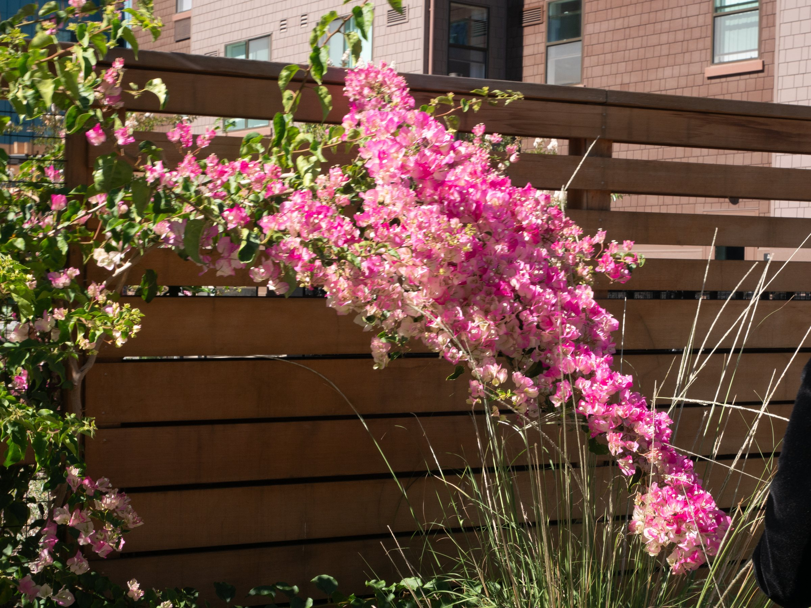
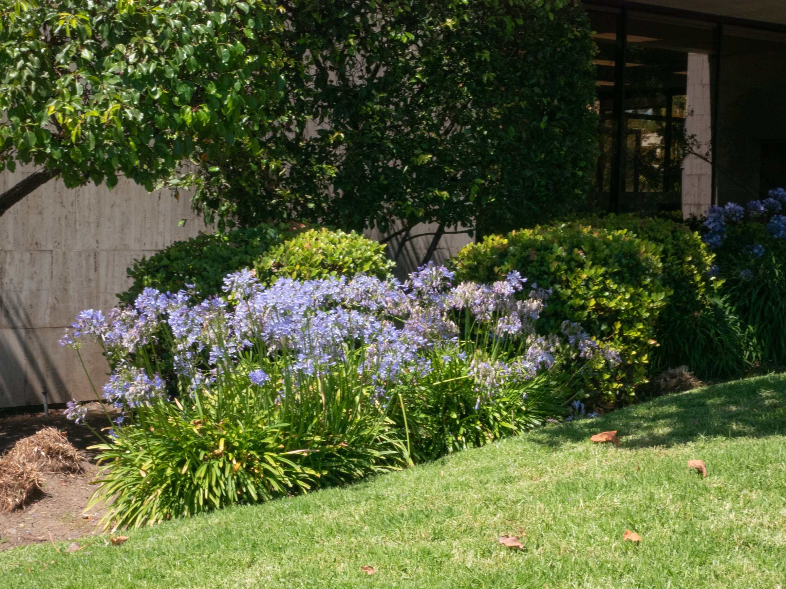
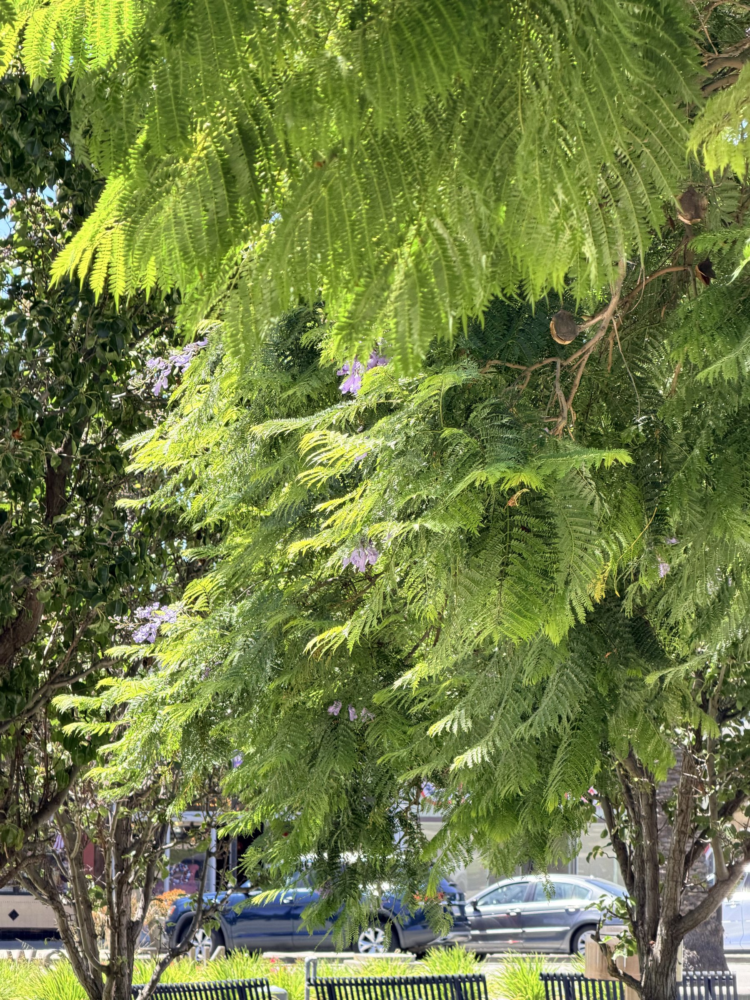
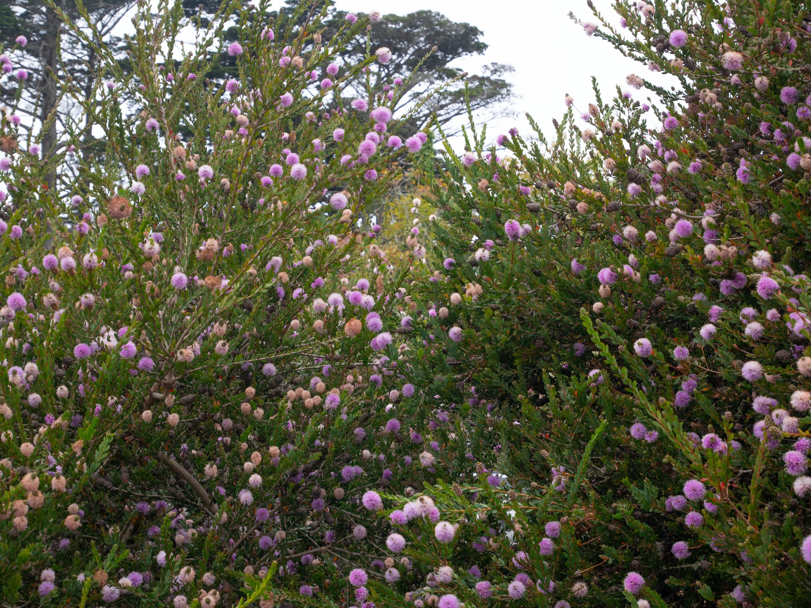
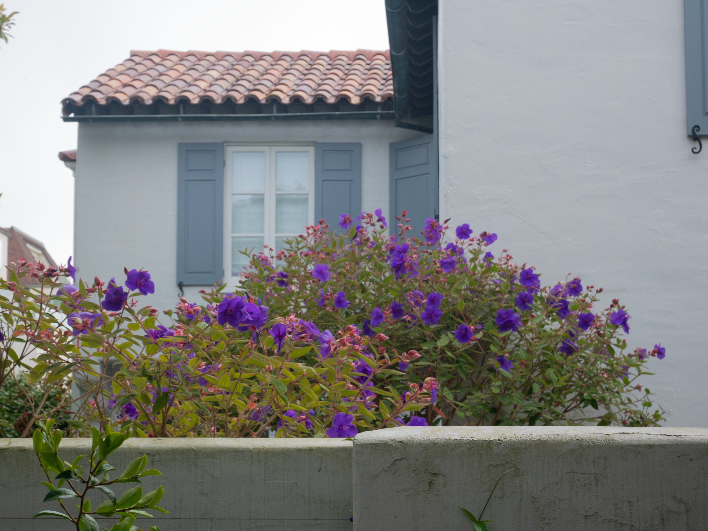
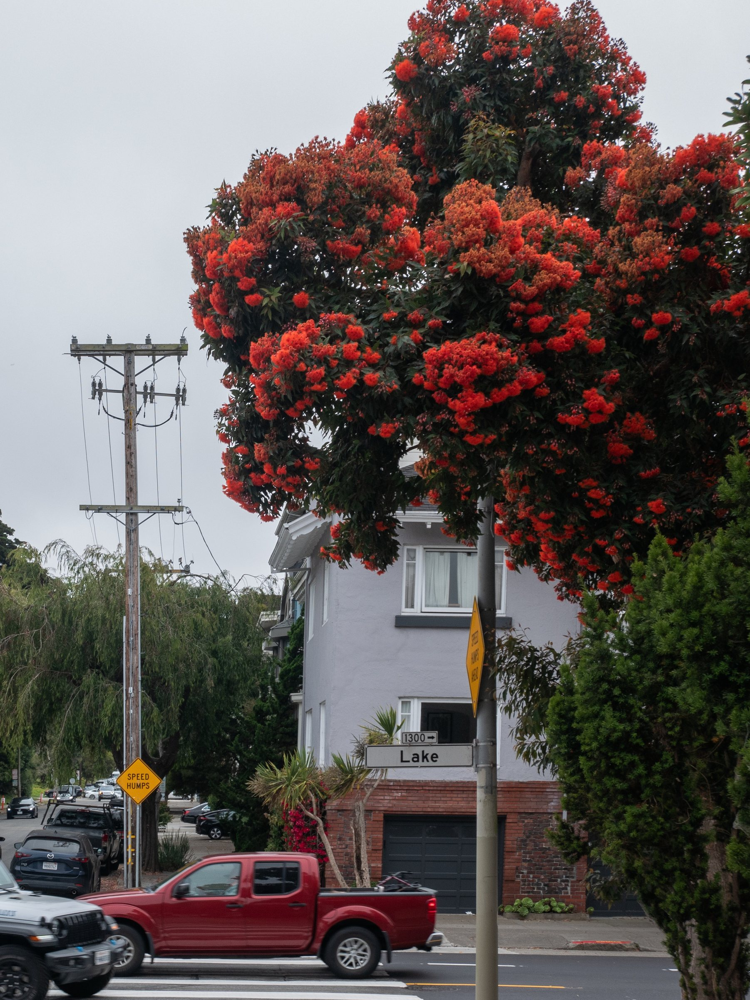

Berkeley · July 2026






For a summer that summers like summer has never summered before…
of summer…
Berkeley · July 2026






For a summer that summers like summer has never summered before…